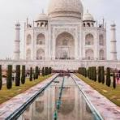
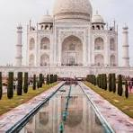

FOUR SECRET OF TAJMAHEL
 

Optical illusions can be spotted everywhere
the Taj Mahalwere masters of proportions
and tricks of the eye. When you first approach the
main
gate that frames the Taj, for example, the
monument appears incredibly close and large. But
as you get closer, it shrinks in size—exactly the
opposite of what
you’d expect. And although the minarets surrounding
the tomb look perfectly upright, the
towers actually lean outward,
which serves both form and function:
in addition providing
aesthetic balance, the pillars would crumble away from the
main crypt in a disaster like an earthquake.
The most famous myth is probably false
According to a popular legend, Shah Jahan wanted desperately for the
mausoleum to be an exquisite masterpiece without an equal. To ensure no one
could recreate the Taj Mahal’s beauty, Shah Jahan supposedly severed the
hands and gouged the eyes of the artisans and craftsmen. Despite the prevalence
of this gruesome tale, historians have found no evidence to support the story—though it does
heighten the drama of the romantic tragedy.
Both of the cenotaphs are empty
Inside thETaj Mahal, the cenotaphs honoring Mumtaz Mahal and Shah Jahan are enclosed
in an
eight-sided chamber ornamented with pietra dura (an inlay with
semi-precious stones) and a marble
lattice screen. But the gorgeous monuments are just for show: The
real sarcophagi are in a quiet room
below, at garden level.
It changes color throughout the day
One of the allures of the Taj Mahal is its constantly changing hue. From
dawn to dusk, the sun transforms
the mausoleum. It may seem pearly gray
and pale pink at sunrise, dazzling white at high noon, and an
orange-bronze when the
sun sets. In the evenings, the Taj can appear translucent blue. Special tickets are
even sold for full moon and eclipse viewings.